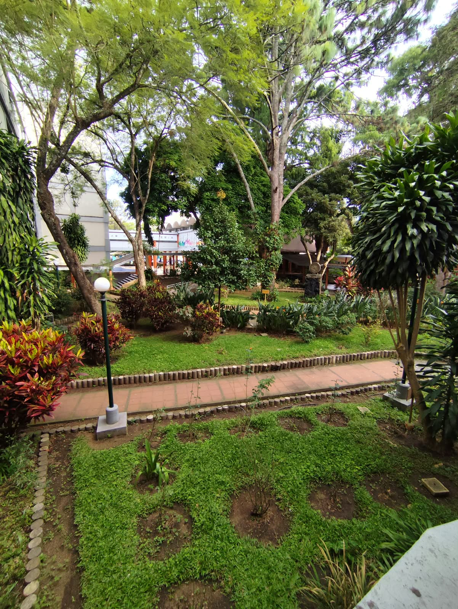

TE INVITO A MI ACTO DE GRADUACIÓN
Ing. Alexander Mejía
Ingeniero en Ciencias y Sistemas
Valió cada
desvelo.
28 de octubre · 10:00 a. m.
Auditorio Francisco Vela · Campus Central
Confirma tu asistencia aquí ↗

28OCTUBRE
2026✳
TÚ TAMBIÉN ERES PARTE DE ESTE LOGRO.